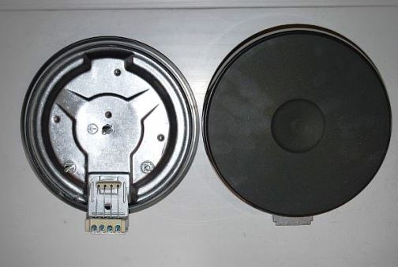
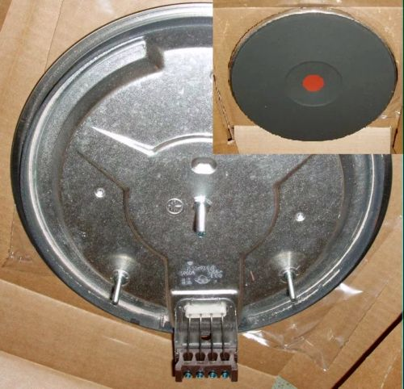

Качественный электромонтаж, Стаж 12 лет. Частный электрик, недорого.
Тел. 8 904 642 08 57. Николай.

Поменять конфорку на электрической плите.
Инструкция от частного электрика, позвоните!
Электрика своими руками.
Наверняка кто-то из Вас, раз Вы читаете эту статью, столкнулся с той же проблемой, что и я, а именно - не работает одна из конфорок на старой электрической плите. Могу сказать, что необязательно иметь группу допуска или разряд (квалификации электриков) чтоб заменить ее самому.
Сколько стоит поменять конфорку на электрической плите.
Цена работы 1500 руб.

Углубляться в основы электротехники или электрооборудования мы не будем, так что буду объяснять все на пальцах, по принципу «снял со старой - поставил на новую».
Еще один из самых важных моментов в замене электрооборудования или арматуры, это ЛЮДИ ОТКЛЮЧИТЕ ЭЛЕКТРИЧЕСТВО (или автомат этой розетки), чтобы потом не было мучительно больно!
И так приступим!
Для начала надо купить ту самую конфорку, я имею в виду, чтоб она соответствовала диаметру заменяемой.

При открывании верхней крышки я столкнулся с двумя саморезами, которые располагались в передней части плиты. Чтобы открыть крышку полностью, эл. плиту пришлось выдвинуть от стены.
Итак, крышка открыта, откручиваем гайку крепления, снимаем крепление и проволоку (заземления).
Теперь легким движение руки изнутри наружу, конфорка остается у нас в руке, крышку можно пока закрыть. Слева старая конфорка, которую надо заменить на новую (справа).
Дальше не задумываясь, какое крепление идет на какой нагревательный элемент (нам это не к чему) откручиваем проводок со старой, и прикручиваем на новую, на то же самое место. Мне пришлось обрезать провода и зачистить по новому, уж больно окислившимися они были.
Ставим конфорку на место, не забывая одеть проволоку заземления. Закрываем крышку и прикручиваем саморезы.
Вот и все, если Вы все сделали правильно, то включаем электричество и НАСЛАЖДАЕМСЯ НОВОЙ КОНФОРКОЙ!
Как поменять наружную розетку самому?
В очередной раз, меняя наружную розетку, (старая начала замыкать) решил запечатлеть весь этот процесс и показать его вам.

Для начала нужно купить наружную розетку.
Для начала отключим электропитание этой розетки, и проверим наличие напряжения в ней. Это можно сделать различными способами: отверткой-индикатором, мультиметром, или просто включить какой-нибудь потребитель (настольная лампа, фен и т. д.) Удостоверяемся, что нет напряжения и начинаем работу.
Откручиваем верхнюю крышку розетки.
Теперь внимательно смотрим, где розетка крепиться к стене (красным), и где крепится провод (зеленым). Все откручиваем и убираем розетку.
Проверяем, выпрямляем провод и смотрим изоляцию, возможно, по-новому обрезаем и зачищаем её. В моем случае, так как площадка под крепление уже вся разбита, а провод короткий и алюминиевый, то я решил немного сдвинуть розетку, нарастив провод.
Подготавливаем новую розетку.
Откручиваем шурупы и снимаем крышку.
Крепим новую розетку на стене. В моем случае стена из гипса, поэтому я прямо саморезами прикрепил ее к стене.
Если же стена из кирпича или бетона, то возможно придется ее сверлить под дюбеля или пробки. А вообще, для этого продаются площадки под розетки, которые мы крепим к стене, а уже саму розетку на эту площадку.
Подготавливаем провода. Так как у меня не было кабеля, то я решил сделать двумя отдельными проводами. На конце сразу можно закрепить клемники. В данном случае я использую соединительные клемники WAGO
(очень незаменимая вещь для электриков). Вторые концы зачищаем.
Все монтируем.
Выламываем стенку крышки, чтоб через ее прошли провода и ставим ее на место.

Сделать электрику в квартире.
Расценки на электропроводку квартир.
Провести электропроводку в новостройке.
Электромонтаж в частном доме.
Электрика в загородном доме.
Сколько стоит замена электропроводки в двухкомнатной квартире?.
Сколько стоит проводка в 3 ком квартире?
Сколько стоит проложить проводку в четырех комнатной квартире?
Сколько стоит сделать внутреннюю проводку?
Стоимость штробление стен.
Электромонтаж двухкомнатной квартиры.
Замена электропроводки в панельном доме.
Электромонтаж проводов в бане.